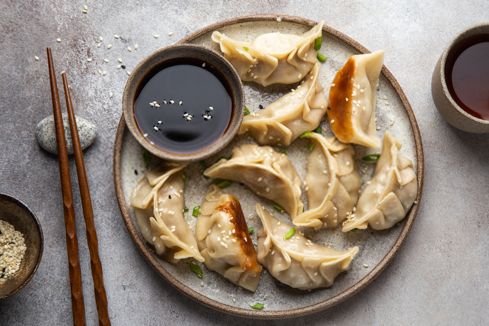

Gyoza

Description
Gyoza (餃子, gyōza) are dumplings filled with ground meat and vegetables and wrapped in a thin dough. Also known as pot stickers, gyoza originated in China (where they are called jiaozi), but have become a very popular dish in Japan.
Ingredients
- 500 grams of ground pork
- 1/4 head of cabbage, shredded
- 1 egg
- 2 spring onions, thinly sliced
- 1 tablespoon soy sauce
- 2 tablespoon sake
- 2 tablespoon mirin
- 2 tablespoon minced fresh ginger
- 40 gyoza wrappers, or as needed
- 2 tablespoon vegetable oil
- 1/2 cup water
- Sauce:
- 1/4 cup rice wine vinegar
- 1/4 cup soy sauce
Steps
- Combine ground pork, cabbage, egg, spring onions, 1 tablespoon soy sauce, sake, mirin, and ginger in a large bowl; mix well.
- Place approximately 1 to 2 teaspoons of the pork mixture in the center of each gyoza wrapper. Moisten your fingers with water and rub around the edges of each wrapper. Fold wrappers in half over filling, creating a semi circle. Take one side of the wrapper and make crimps along the edges for a decorative pattern (like pleats of a skirt) and press along the edges to seal the two sides together. Ensure there isn't much excess air caught inside the dumpling. Repeat until all the pork mixture is used.
- Heat vegetable oil in a large skillet over medium-high heat. Place as many gyoza in the skillet as fit in a single layer and fry until the bottom is browned, about 3 to 5 minutes. Add water to skillet and reduce heat. Cover and allow gyoza to steam until all the water has evaporated, about 5 minutes. Repeat with the remaining gyoza.
- Mix rice vinegar and soy sauce together for a dipping sauce and serve with the gyoza.
Other recipes